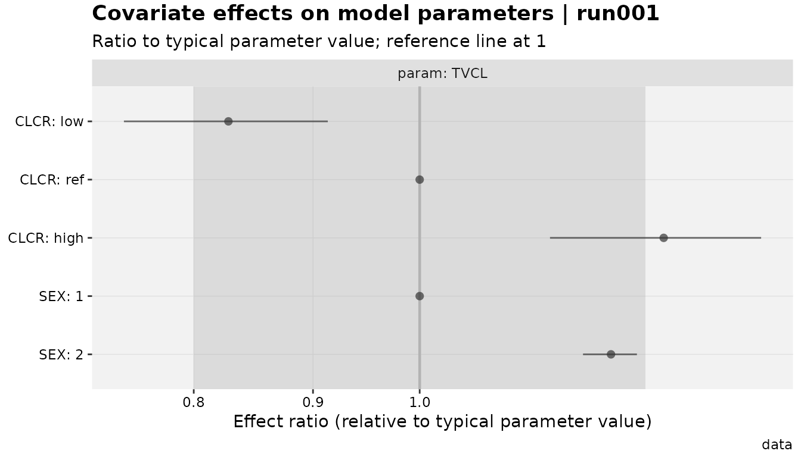
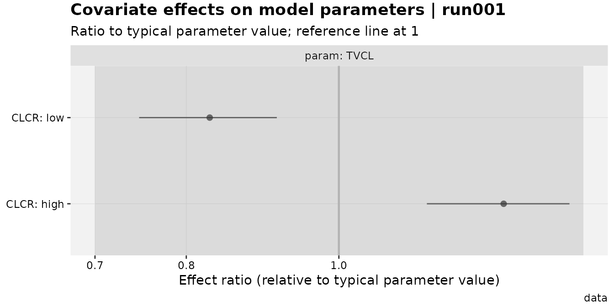
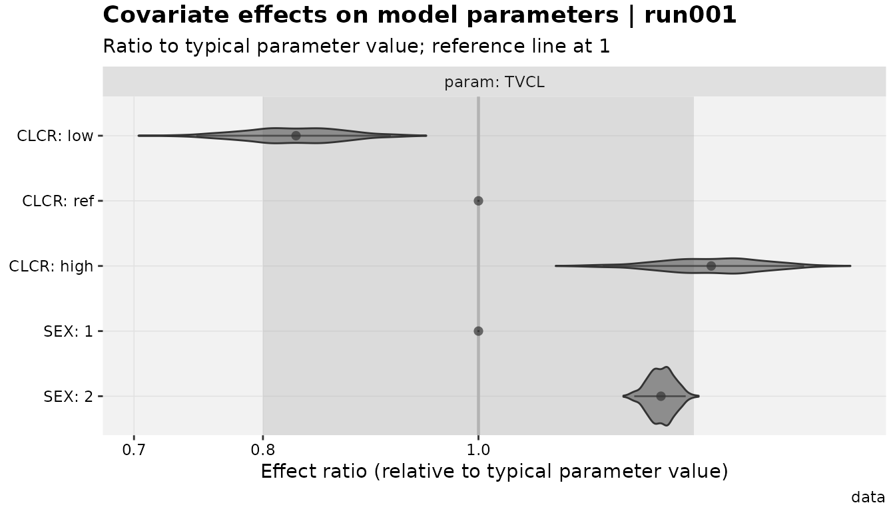

Parameter Associations: Omega CVs and Covariate Effects
Source:vignettes/articles/parameter-associations.Rmd
parameter-associations.RmdWhy declare anything at all?
A fitted NONMEM (or nlmixr2) model doesn’t carry an
explicit record of why a THETA is where it is.
xpose can read the numbers back out, but it has no way to
know that OMEGA(3,3) is log-normal on CL, or
that THETA(7) is an allometric exponent on
CLCR, rather than something else entirely. Most of the time
that doesn’t matter – get_prm() already assumes log-normal,
which covers the common case – but the moment a model deviates from that
(a logit-transformed variability term, a Box-Cox covariate effect, a
piecewise “hockey-stick” model), xpose has nothing to fall
back on.
xpose.xtras gives you a way to say the quiet part out
loud, once, and have it flow through into reporting:
- [
add_prm_association()] links a structural parameter to the omega driving its between-subject variability, so [get_prm()] can report a meaningful CV% even when the relationship isn’t plain log-normal. - [
add_cov_association()] links a structural parameter to a covariate, so [prm_cov()]/[cov_forest()] can report and plot the covariate’s effect as a ratio to the parameter’s typical value.
The two are deliberately parallel: the same formula-based declaration
style (LHS ~ fun(...)), the same two-stage
validate-then-store behavior, and the same “redeclare to replace”
semantics. This article covers both, plus [mutate_prm()],
the escape hatch for when a parameter isn’t on the scale either
mechanism assumes.
Omega associations and CV%
By default, [get_prm()] treats every diagonal omega as
log-normal and reports CV% accordingly:
pheno_base %>%
get_prm(quiet = TRUE) %>%
select(type, name, label, value, cv)
#> # A tibble: 8 × 5
#> type name label value cv
#> <chr> <chr> <chr> <num:3> <num:3>
#> 1 the THETA1 "CL" 0.0068 NA
#> 2 the THETA2 "V" 1.4 NA
#> 3 the THETA3 "RUVADD" 2.86 NA
#> 4 the THETA4 "RUVPRO" 0 NA
#> 5 ome OMEGA(1,1) "IIVCL" 0.489 52.0
#> 6 ome OMEGA(2,1) "" 0.998 NA
#> 7 ome OMEGA(2,2) "IIVV" 0.393 40.9
#> 8 sig SIGMA(1,1) "" 1 NAIIVCL and IIVV get a cv
column; the off-diagonal and fixed-effect rows don’t (CV% is only
defined for a diagonal random effect acting on a specific structural
parameter). This is already the CV% you’d get by hand from a log-normal
assumption – add_prm_association() becomes useful the
moment that assumption is wrong for a given parameter.
Say CL was actually fit as logit-normal instead (purely
for illustration – it wasn’t, in this model). Declaring that changes
only the cv column; nothing else about the fit or the table
shape changes:
pheno_base %>%
add_prm_association(CL ~ logit(IIVCL)) %>%
get_prm(quiet = TRUE) %>%
select(type, name, label, value, cv)
#> # A tibble: 8 × 5
#> type name label value cv
#> <chr> <chr> <chr> <num:3> <num:3>
#> 1 the THETA1 "CL" 0.0068 NA
#> 2 the THETA2 "V" 1.4 NA
#> 3 the THETA3 "RUVADD" 2.86 NA
#> 4 the THETA4 "RUVPRO" 0 NA
#> 5 ome OMEGA(1,1) "IIVCL" 0.489 51.3
#> 6 ome OMEGA(2,1) "" 0.998 NA
#> 7 ome OMEGA(2,2) "IIVV" 0.393 40.9
#> 8 sig SIGMA(1,1) "" 1 NA
#> # Parameter table includes the following associations:
#> CL~logit(IIVCL)Built-in distributions cover the common cases: log (the
default, made explicit), logexp (log(1+X)),
logit, arcsin, and nmboxcox
(Box-Cox, needs a lambda):
pheno_base %>%
add_prm_association(V ~ nmboxcox(IIVV, lambda = 0.5)) %>%
get_prm(quiet = TRUE) %>%
select(name, label, value, cv)
#> # A tibble: 8 × 4
#> name label value cv
#> <chr> <chr> <num:3> <num:3>
#> 1 THETA1 "CL" 0.0068 NA
#> 2 THETA2 "V" 1.4 NA
#> 3 THETA3 "RUVADD" 2.86 NA
#> 4 THETA4 "RUVPRO" 0 NA
#> 5 OMEGA(1,1) "IIVCL" 0.489 52.0
#> 6 OMEGA(2,1) "" 0.998 NA
#> 7 OMEGA(2,2) "IIVV" 0.393 38.3
#> 8 SIGMA(1,1) "" 1 NA
#> # Parameter table includes the following associations:
#> V~nmboxcox(IIVV)For anything else, custom() takes a
qdist/pdist pair (the transform and its
inverse):
pheno_base %>%
add_prm_association(V ~ custom(IIVV, qdist = function(x) log(0.001 + x), pdist = function(x) exp(x) - 0.001)) %>%
get_prm(quiet = TRUE) %>%
select(name, label, value, cv)
#> # A tibble: 8 × 4
#> name label value cv
#> <chr> <chr> <num:3> <num:3>
#> 1 THETA1 "CL" 0.0068 NA
#> 2 THETA2 "V" 1.4 NA
#> 3 THETA3 "RUVADD" 2.86 NA
#> 4 THETA4 "RUVPRO" 0 NA
#> 5 OMEGA(1,1) "IIVCL" 0.489 52.0
#> 6 OMEGA(2,1) "" 0.998 NA
#> 7 OMEGA(2,2) "IIVV" 0.393 41.0
#> 8 SIGMA(1,1) "" 1 NA
#> # Parameter table includes the following associations:
#> V~custom(IIVV)Redeclaring an association for the same parameter replaces it;
drop_prm_association() removes it entirely (falling back to
the log-normal default):
pheno_base %>%
add_prm_association(CL ~ logit(IIVCL)) %>%
drop_prm_association(CL) %>%
get_prm(quiet = TRUE) %>%
select(name, label, value, cv)
#> # A tibble: 8 × 4
#> name label value cv
#> <chr> <chr> <num:3> <num:3>
#> 1 THETA1 "CL" 0.0068 NA
#> 2 THETA2 "V" 1.4 NA
#> 3 THETA3 "RUVADD" 2.86 NA
#> 4 THETA4 "RUVPRO" 0 NA
#> 5 OMEGA(1,1) "IIVCL" 0.489 52.0
#> 6 OMEGA(2,1) "" 0.998 NA
#> 7 OMEGA(2,2) "IIVV" 0.393 40.9
#> 8 SIGMA(1,1) "" 1 NAOne important caveat: the CV% calculation assumes
the fixed-effect value is on its natural, untransformed scale.
If CL were actually fitted on the logit scale itself (not
just related to a logit-normal omega), the reported value
would need converting back first – see Rescaling with
mutate_prm() below.
Covariate associations and forest plots
The same idea, for covariates instead of omegas. xpdb_x
already has a real covariate effect in it – THETA7, labeled
“CRCL on CL”:
xpdb_x %>%
get_prm(.problem = 1, quiet = TRUE) %>%
select(type, name, label, value, se)
#> # A tibble: 11 × 5
#> type name label value se
#> <chr> <chr> <chr> <num:3> <num:3>
#> 1 the THETA1 "TVCL" 26.3 0.891
#> 2 the THETA2 "TVV" 1.35 0.0438
#> 3 the THETA3 "TVKA" 4.2 0.809
#> 4 the THETA4 "LAG" 0.208 0.0157
#> 5 the THETA5 "Prop. Err" 0.205 0.0224
#> 6 the THETA6 "Add. Err" 0.0106 0.00366
#> 7 the THETA7 "CRCL on CL" 0.00717 0.0017
#> 8 ome OMEGA(1,1) "IIV CL" 0.27 0.0233
#> 9 ome OMEGA(2,2) "IIV V" 0.195 0.032
#> 10 ome OMEGA(3,3) "IIV KA" 1.38 0.202
#> 11 sig SIGMA(1,1) "" 1 NAadd_cov_association() describes how a covariate affects
a structural parameter, as a ratio to that parameter’s typical value
(always 1 at a declared reference value/level):
xpdb_x %>%
add_cov_association(TVCL ~ linear(CLCR, THETA7, ref = 64)) %>%
prm_cov()
#> # A tibble: 3 × 10
#> param covariate covtype level value is_ref effect ci_low ci_high ci_method
#> <chr> <chr> <chr> <chr> <chr> <lgl> <dbl> <dbl> <dbl> <chr>
#> 1 TVCL CLCR cont low 40 FALSE 0.828 0.747 0.913 simulation
#> 2 TVCL CLCR cont ref 64 TRUE 1 1 1 simulation
#> 3 TVCL CLCR cont high 102 FALSE 1.27 1.14 1.40 simulation
#> # `effect` is a ratio to the parameter's typical value (1 at the reference
#> covariate value/level); CI via simulation.ref is always required, explicitly –
there’s no way to infer it safely, since NONMEM control streams often
normalize a covariate against a hardcoded constant that isn’t visible
from the xpdb alone.
Built-in forms
Six built-ins cover the usual covariate models, all constructed so
the effect ratio is exactly 1 at ref
regardless of the theta value:
# power (allometric): (COV/ref)^theta
xpdb_x %>% add_cov_association(TVCL ~ power(CLCR, THETA7, ref = 64)) %>% prm_contcov()
#> # A tibble: 3 × 10
#> param covariate covtype level value is_ref effect ci_low ci_high ci_method
#> * <chr> <chr> <chr> <chr> <chr> <lgl> <dbl> <dbl> <dbl> <chr>
#> 1 TVCL CLCR cont low 40 FALSE 0.997 0.995 0.998 simulation
#> 2 TVCL CLCR cont ref 64 TRUE 1 1 1 simulation
#> 3 TVCL CLCR cont high 102 FALSE 1.00 1.00 1.00 simulation
#> # `effect` is a ratio to the parameter's typical value (1 at the reference
#> covariate value/level); CI via simulation.
# exponential: exp(theta*(COV-ref))
xpdb_x %>% add_cov_association(TVCL ~ exponential(CLCR, THETA7, ref = 64)) %>% prm_contcov()
#> # A tibble: 3 × 10
#> param covariate covtype level value is_ref effect ci_low ci_high ci_method
#> * <chr> <chr> <chr> <chr> <chr> <lgl> <dbl> <dbl> <dbl> <chr>
#> 1 TVCL CLCR cont low 40 FALSE 0.842 0.776 0.917 simulation
#> 2 TVCL CLCR cont ref 64 TRUE 1 1 1 simulation
#> 3 TVCL CLCR cont high 102 FALSE 1.31 1.15 1.49 simulation
#> # `effect` is a ratio to the parameter's typical value (1 at the reference
#> covariate value/level); CI via simulation.
# additive: (theta+COV)/(theta+ref) -- an uncommon but simple par = theta + cov model
xpdb_x %>% add_cov_association(TVCL ~ additive(CLCR, THETA7, ref = 64)) %>% prm_contcov()
#> # A tibble: 3 × 10
#> param covariate covtype level value is_ref effect ci_low ci_high ci_method
#> * <chr> <chr> <chr> <chr> <chr> <lgl> <dbl> <dbl> <dbl> <chr>
#> 1 TVCL CLCR cont low 40 FALSE 0.625 0.625 0.625 simulation
#> 2 TVCL CLCR cont ref 64 TRUE 1 1 1 simulation
#> 3 TVCL CLCR cont high 102 FALSE 1.59 1.59 1.59 simulation
#> # `effect` is a ratio to the parameter's typical value (1 at the reference
#> covariate value/level); CI via simulation.
# hockey-stick (PsN-style): different slope above/below ref (which doubles as the
# breakpoint by default; see `brk=` to separate them)
xpdb_x %>% add_cov_association(TVCL ~ hockey(CLCR, THETA7, THETA4, ref = 64)) %>% prm_contcov()
#> # A tibble: 3 × 10
#> param covariate covtype level value is_ref effect ci_low ci_high ci_method
#> * <chr> <chr> <chr> <chr> <chr> <lgl> <dbl> <dbl> <dbl> <chr>
#> 1 TVCL CLCR cont low 40 FALSE 0.828 0.747 0.913 simulation
#> 2 TVCL CLCR cont ref 64 TRUE 1 1 1 simulation
#> 3 TVCL CLCR cont high 102 FALSE 8.90 7.68 10.1 simulation
#> # `effect` is a ratio to the parameter's typical value (1 at the reference
#> covariate value/level); CI via simulation.
# catshift: one theta per non-reference categorical level
xpdb_x %>% add_cov_association(TVCL ~ catshift(SEX, THETA4, ref = 1)) %>% prm_catcov()
#> # A tibble: 2 × 10
#> param covariate covtype level value is_ref effect ci_low ci_high ci_method
#> * <chr> <chr> <chr> <chr> <chr> <lgl> <dbl> <dbl> <dbl> <chr>
#> 1 TVCL SEX cat 1 1 TRUE 1 1 1 simulation
#> 2 TVCL SEX cat 2 2 FALSE 1.21 1.18 1.24 simulation
#> # `effect` is a ratio to the parameter's typical value (1 at the reference
#> covariate value/level); CI via simulation.Note how differently power and linear read
the same THETA7: a power exponent of
0.007 barely moves the ratio across any realistic
CLCR range, while the same number as a linear slope gives a
substantial swing. Picking the right built-in for how the
covariate actually enters the model matters – the computation
can’t tell the two apart for you, and a mismatched builtin produces a
numerically valid but silently wrong ratio. When none of the built-ins
fit, custom() takes a fun(cov, ref, theta),
validated at declaration time to confirm
fun(ref, ref, theta) == 1 for a few probe thetas:
xpdb_x %>%
add_cov_association(
TVCL ~ custom(CLCR, THETA7, ref = 64, fun = function(cov, ref, theta) (cov / ref)^theta)
) %>%
prm_contcov()
#> # A tibble: 3 × 10
#> param covariate covtype level value is_ref effect ci_low ci_high ci_method
#> * <chr> <chr> <chr> <chr> <chr> <lgl> <dbl> <dbl> <dbl> <chr>
#> 1 TVCL CLCR cont low 40 FALSE 0.997 0.995 0.998 simulation
#> 2 TVCL CLCR cont ref 64 TRUE 1 1 1 simulation
#> 3 TVCL CLCR cont high 102 FALSE 1.00 1.00 1.00 simulation
#> # `effect` is a ratio to the parameter's typical value (1 at the reference
#> covariate value/level); CI via simulation.drop_cov_association() removes a declared (parameter,
covariate) pair, the same way drop_prm_association() works
for omegas:
xpdb_x %>%
add_cov_association(TVCL ~ linear(CLCR, THETA7, ref = 64)) %>%
drop_cov_association(TVCL ~ CLCR) %>%
prm_cov()
#> # A tibble: 0 × 10
#> # ℹ 10 variables: param <chr>, covariate <chr>, covtype <chr>, level <chr>,
#> # value <chr>, is_ref <lgl>, effect <dbl>, ci_low <dbl>, ci_high <dbl>,
#> # ci_method <chr>
prm_cov() output
prm_contcov()/prm_catcov()/prm_cov()
all return the same shape: one row per (parameter, covariate, evaluation
point), with
effect/ci_low/ci_high as ratios
to the typical value, and an is_ref flag for the
(uninformative, always-1) reference row:
xpdb_x %>%
add_cov_association(
TVCL ~ linear(CLCR, THETA7, ref = 64),
TVCL ~ catshift(SEX, THETA4, ref = 1)
) %>%
prm_cov()
#> # A tibble: 5 × 10
#> param covariate covtype level value is_ref effect ci_low ci_high ci_method
#> <chr> <chr> <chr> <chr> <chr> <lgl> <dbl> <dbl> <dbl> <chr>
#> 1 TVCL CLCR cont low 40 FALSE 0.828 0.747 0.913 simulation
#> 2 TVCL CLCR cont ref 64 TRUE 1 1 1 simulation
#> 3 TVCL CLCR cont high 102 FALSE 1.27 1.14 1.40 simulation
#> 4 TVCL SEX cat 1 1 TRUE 1 1 1 simulation
#> 5 TVCL SEX cat 2 2 FALSE 1.21 1.18 1.24 simulation
#> # `effect` is a ratio to the parameter's typical value (1 at the reference
#> covariate value/level); CI via simulation.Continuous covariates are evaluated at the 5th/95th percentile of the
observed data (probs=) plus the reference; categorical
covariates at every observed level. The confidence interval comes from
ci_method: "simulation" (default) draws from
N(theta_hat, se) and propagates through the (possibly
nonlinear) effect function; "delta" is a cheaper
first-order analytic approximation.
Plotting: cov_forest()
xpdb_x %>%
add_cov_association(
TVCL ~ linear(CLCR, THETA7, ref = 64),
TVCL ~ catshift(SEX, THETA4, ref = 1)
) %>%
cov_forest()
#> Using data from $prob no.1
The default view includes a reference line at 1, a
shaded “no relevant effect” band (region=, default
c(0.8, 1.25), a common bioequivalence-style convention –
override or drop it with type=), and one row per evaluation
point. show_ref = FALSE drops the uninformative reference
rows; TVCL ~ CLCR (or any param ~ covariate
formula) restricts which declared associations get plotted:
xpdb_x %>%
add_cov_association(
TVCL ~ linear(CLCR, THETA7, ref = 64),
TVCL ~ catshift(SEX, THETA4, ref = 1)
) %>%
cov_forest(TVCL ~ CLCR, show_ref = FALSE, region = c(0.7, 1.43))
#> Using data from $prob no.1
Including "v" in type adds a violin layer
showing the actual simulation draws behind each interval (requires
ci_method = "simulation", the default):
xpdb_x %>%
add_cov_association(
TVCL ~ linear(CLCR, THETA7, ref = 64),
TVCL ~ catshift(SEX, THETA4, ref = 1)
) %>%
cov_forest(type = "pilrv")
#> Using data from $prob no.1
#> Re-fetching data for the violin layer (one row per draw, a different shape than
#> the point/interval data).
#> Using data from $prob no.1
cov_forest() is the covariate-specific wrapper around a
generic, forest-plot-agnostic renderer, [xplot_forest()] –
the same split as
eta_vs_catcov()/xplot_boxplot() elsewhere in
the package. Reaching for xplot_forest() directly is only
useful when plotting something other than a
prm_cov() table.
Rescaling with mutate_prm()
Both association mechanisms assume a specific scale:
add_prm_association() assumes the fixed-effect value is
untransformed (natural units, not logit/log/whatever);
add_cov_association() assumes the chosen builtin’s formula
matches the model code, including how the LHS parameter itself was
parameterized – though notably, the covariate computation never
touches the LHS’s own fitted value, only the covariate-effect
theta, so it’s automatically agnostic to whether the LHS was log- or
identity-parameterized.
When a parameter genuinely needs converting first,
[mutate_prm()] does that in place, updating both the value
and (via simulation) its standard error:
# Say THETA12 in vismo_pomod was fitted on the logit scale, and needs to be
# expressed on the natural (0-1) scale before an association is declared
vismo_pomod %>%
mutate_prm(THETA12 ~ plogis) %>%
get_prm(quiet = TRUE) %>%
filter(name == "THETA12") %>%
select(name, label, value, se)
#> Warning: [$prob no.1, subprob no.1, lce] $SIGMA labels did not match the number
#> of SIGMAs in the `.ext` file.
#> Warning: Shrinkage missing for sigma estimates, if any are modeled. Using NA in this
#> table.
#> # A tibble: 1 × 4
#> name label value se
#> <chr> <chr> <num:> <num:3>
#> 1 THETA12 THETA(12) ; B1: baseline of LOGIT(P(AE>=1)); final est… 0.0157 0.00302This is the same recommendation
[add_prm_association()]’s own documentation already carries
for the logit/Box-Cox omega case – reach for mutate_prm()
first, then declare the association on the now-natural-scale value.
Session info
sessionInfo()
#> R version 4.6.1 (2026-06-24)
#> Platform: x86_64-pc-linux-gnu
#> Running under: Ubuntu 24.04.4 LTS
#>
#> Matrix products: default
#> BLAS: /usr/lib/x86_64-linux-gnu/openblas-pthread/libblas.so.3
#> LAPACK: /usr/lib/x86_64-linux-gnu/openblas-pthread/libopenblasp-r0.3.26.so; LAPACK version 3.12.0
#>
#> locale:
#> [1] LC_CTYPE=C.UTF-8 LC_NUMERIC=C LC_TIME=C.UTF-8
#> [4] LC_COLLATE=C.UTF-8 LC_MONETARY=C.UTF-8 LC_MESSAGES=C.UTF-8
#> [7] LC_PAPER=C.UTF-8 LC_NAME=C LC_ADDRESS=C
#> [10] LC_TELEPHONE=C LC_MEASUREMENT=C.UTF-8 LC_IDENTIFICATION=C
#>
#> time zone: UTC
#> tzcode source: system (glibc)
#>
#> attached base packages:
#> [1] stats graphics grDevices utils datasets methods base
#>
#> other attached packages:
#> [1] xpose.xtras_0.2.0 xpose_0.4.23 ggplot2_4.0.3 dplyr_1.2.1
#>
#> loaded via a namespace (and not attached):
#> [1] utf8_1.2.6 sass_0.4.10 generics_0.1.4 tidyr_1.3.2
#> [5] stringi_1.8.7 hms_1.1.4 digest_0.6.39 magrittr_2.0.5
#> [9] evaluate_1.0.5 grid_4.6.1 RColorBrewer_1.1-3 fastmap_1.2.0
#> [13] jsonlite_2.0.0 backports_1.5.1 conflicted_1.2.0 purrr_1.2.2
#> [17] scales_1.4.0 tweenr_2.0.3 textshaping_1.0.5 jquerylib_0.1.4
#> [21] cli_3.6.6 rlang_1.3.0 polyclip_1.10-7 withr_3.0.3
#> [25] cachem_1.1.0 yaml_2.3.12 otel_0.2.0 tools_4.6.1
#> [29] tzdb_0.5.0 memoise_2.0.1 checkmate_2.3.4 forcats_1.0.1
#> [33] vctrs_0.7.3 R6_2.6.1 lifecycle_1.0.5 stringr_1.6.0
#> [37] fs_2.1.0 htmlwidgets_1.6.4 MASS_7.3-65 ragg_1.5.2
#> [41] pkgconfig_2.0.3 desc_1.4.3 pkgdown_2.2.1 pillar_1.11.1
#> [45] bslib_0.11.0 gtable_0.3.6 pmxcv_0.0.2 glue_1.8.1
#> [49] ggforce_0.5.0 systemfonts_1.3.2 xfun_0.60 tibble_3.3.1
#> [53] tidyselect_1.2.1 knitr_1.51 farver_2.1.2 htmltools_0.5.9
#> [57] rmarkdown_2.31 readr_2.2.0 compiler_4.6.1 S7_0.2.2